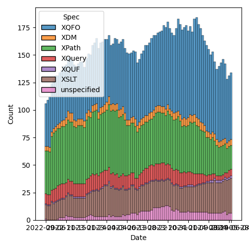
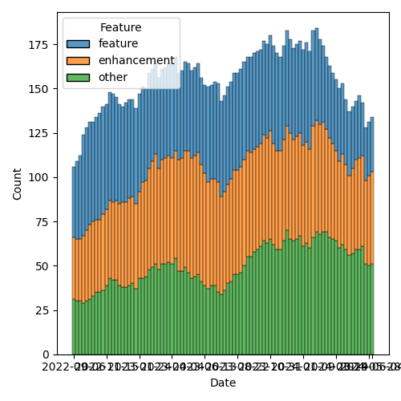

QT4 CG Meeting 081 Minutes 2024-06-11
Table of Contents
- Minutes
- Summary of new and continuing actions
[1/18] - 1. Administrivia
- 2. Technical Agenda
- 2.1. Face-to-face follow-up
- 2.2. PR #1260: 1187 Add midpoint-rounding option to fn:round()
- 2.3. PR #1259: 1241 Add constraint to resolve node constructor ambiguity
- 2.4. PR #1258: 1246 Revert incompatibility in json-to-xml number formatting
- 2.5. PR #1257: 305 Add options parameter for parse-xml and parse-xml-fragment
- 2.6. PR #1256: 991 Fix editorial details in fn:invisible-xml
- 3. Any other business
- 4. Adjourned
Meeting index / QT4CG.org / Dashboard / GH Issues / GH Pull Requests
Minutes
Approved at meeting 082 on 18 June 2024.
Summary of new and continuing actions [1/18]
[ ]QT4CG-063-06: MK to consider refactoring the declare item type syntax to something like declare record[ ]QT4CG-077-04: MK to review inconsistencies discovered in review of #1117[ ]QT4CG-078-01: MK to make the default for normalize-newlines backwards compatible.[ ]QT4CG-079-01: WP to seek expert advice on hashing functions.[ ]QT4CG-080-01: NW to add what the DocBook stylesheets do for this function[ ]QT4CG-080-02: NW to fix issue classification so PR #1181 isn’t misclassified as an XSLT issue[ ]QT4CG-080-03: MK to make a separate issue for @as on xsl:value-of[ ]QT4CG-080-04: NW to revise p:invisible-xml[ ]QT4CG-080-05: NW to add absolute property to the parse-uri output[ ]QT4CG-080-06: NW to investigate the cross-spec reference errors in the build[ ]QT4CG-080-07: NW to update the build instructions in the README[ ]QT4CG-080-08: MK to work out what happened to his next-match PR[ ]QT4CG-080-09: MK to address comments made on PR #832[ ]QT4CG-081-01: MK to update fn:round-to-even to point to fn:round[X]QT4CG-081-02: NW to make an issue about how grammar productions should be identified[ ]QT4CG-081-03: MK to make the options parameter optional infn:parse-xmlandfn:parse-xml-fragment[ ]QT4CG-081-04: NW to update the function signature of fn:invisible-xml[ ]QT4CG-081-04: NW to describe why the grammar option can be empty on fn:invisible-xml
1. Administrivia
1.1. Roll call [9/12]
CG gives regrets.
[X]Reece Dunn (RD) [x:10-][ ]Sasha Firsov (SF)[ ]Christian Grün (CG)[X]Joel Kalvesmaki (JK)[X]Michael Kay (MK)[X]Juri Leino (JLO)[X]John Lumley (JLY)[X]Dimitre Novatchev (DN)[X]Wendell Piez (WP)[ ]Ed Porter (EP)[X]C. M. Sperberg-McQueen (MSM)[X]Norm Tovey-Walsh (NW). Scribe. Chair.
1.2. Accept the agenda
Proposal: Accept the agenda.
Accepted.
1.2.1. Status so far…

Figure 1: “Burn down” chart on open issues

Figure 2: Open issues by specification

Figure 3: Open issues by type
1.3. Approve minutes of the previous meeting
Proposal: Accept the minutes of the previous meeting.
Accepted.
1.4. Next meeting
This next meeting is planned for 18 June.
CG gives regrets for three weeks.
1.5. Review of open action items [2/15]
[ ]QT4CG-063-06: MK to consider refactoring the declare item type syntax to something like declare record[X]QT4CG-077-03: MK to add a note about document order across documents[ ]QT4CG-077-04: MK to review inconsistencies discovered in review of #1117[ ]QT4CG-078-01: MK to make the default for normalize-newlines backwards compatible.[ ]QT4CG-079-01: WP to seek expert advice on hashing functions.[ ]QT4CG-080-01: NW to add what the DocBook stylesheets do for this function[ ]QT4CG-080-02: NW to fix issue classification so PR #1181 isn’t misclassified as an XSLT issue[ ]QT4CG-080-03: MK to make a separate issue for @as on xsl:value-of[ ]QT4CG-080-04: NW to revise p:invisible-xml[ ]QT4CG-080-05: NW to add absolute property to the parse-uri output[ ]QT4CG-080-06: NW to investigate the cross-spec reference errors in the build[ ]QT4CG-080-07: NW to update the build instructions in the README[ ]QT4CG-080-08: MK to work out what happened to his next-match PR[ ]QT4CG-080-09: MK to address comments made on PR #832[X]QT4CG-080-10: NW to find out if we can change the community group name
1.6. Review of open pull requests and issues
1.6.1. Blocked
The following PRs are open but have merge conflicts or comments which suggest they aren’t ready for action.
- PR #1231: 1193 Parsing Functions: Empty input
- PR #1227: 150 PR resubmission for fn ranks
- PR #1062: 150bis - revised proposal for fn:ranks
- PR #832: 77 Add map:deep-update and array:deep-update
- PR #529: 528 fn:elements-to-maps
The parse-uri PR is pending more coordination between NW and CG on the test suite:
- PR #1244: 566-partial Rewrite parse-uri
The BLAKE3 PR is pending WP’s action:
- PR #1228: – Adding the BLAKE3 hashing algorithm to fn:hash
1.6.2. Merge without discussion
The following PRs are editorial, small, or otherwise appeared to be uncontroversial when the agenda was prepared. The chairs propose that these can be merged without discussion. If you think discussion is necessary, please say so.
- PR #1250: 1048 Extended decimal format properties
- PR #1249: 31 Introduce "for key $k value $v in $map"
- PR #1181: 296 Allow default-namespace=##any
- PR #1015: 1013 [XSLT] Clarify effect of accumulator capture on non-element nodes
- PR #956: 850-partial Editorial improvements to parse-html()
- PR #921: 920 Allow xsl:break and xsl:next-iteration within branch of xsl:switch
Acccepted without further discussion.
1.6.3. Close without action
It has been proposed that the following issues be closed without action. If you think discussion is necessary, please say so.
- Issue #1119: Declare namespace bindings in XPath
- Issue #1055: xsl:variable/@as - simplifying the language - attempt 2
- Issue #955: Options parameters as record types
- Issue #954: Establish a default value for the XSLT fixed-namespaces attribute
- Issue #745: Support for inline (anonymous) xslt functions
- Issue #557: fn:unparsed-binary: accessing and manipulating binary types
- Issue #379: Namespace handling in parse-html
- Issue #266: Add an option on xsl:copy-of to copy a subtree with a change of namespace
- Issue #168: XSLT Extension Instructions invoking Named Templates
- Issue #111: FLWOR tracing
Accepted.
1.6.4. XSLT focused
The following PRs appear to be candidates for a future XSLT-focused meeting.
- PR #1255: 1253 whitespace in xsl:switch
- PR #1254: 729 Add rules for use of xsi:schemaLocation during validation
- PR #1181: 296 Allow default-namespace=##any
- PR #1015: 1013 [XSLT] Clarify effect of accumulator capture on non-element nodes
- PR #921: 920 Allow xsl:break and xsl:next-iteration within branch of xsl:switch
These issues identify the XSLT-focused changes that have been made to the specifications but which have not been established by the community group as the status quo.
- Issue #168: XSLT Extension Instructions invoking Named Templates
2. Technical Agenda
2.1. Face-to-face follow-up
Let’s see if there’s any follow-up discussion from the face-to-face now that the minutes have been published for a few days.
- JK: As a result of the face-to-face, do we know when we’ll finish?
- NW: I think this is the first step in “turning the ship.”
- MK: I think I came away with a good sense of what we need to do.
- WP: What are we publishing?
- NW: The whole kit-and-kaboodle.
- JLY: Who’s implementing? Just Saxonica and Base X?
- MK: There are a few more implementors, but they may be doing partial implementations.
- … We have no formal requirement to demonstrate two complete, interoperable implementations.
2.2. PR #1260: 1187 Add midpoint-rounding option to fn:round()
See PR #1260
- MK: This arose from a real-world example. We can’t support German accounting
standards at the moment, apparently.
- … Adds a third argument to
fn:round().
- … Adds a third argument to
- RD: Would it be worth in
fn:round-to-even()stating that it’s equivalent to one of thefn:round()options. - MK: Yep.
Proposal: Accept this PR.
Accdepted.
ACTION: QT4CG-081-01: MK to update fn:round-to-even to point to fn:round
2.3. PR #1259: 1241 Add constraint to resolve node constructor ambiguity
See PR #1259
- MK: CG raised a grammar ambiguity. I’ve added an extra-grammatical constraint
to resolve the issue.
- … It only arises in XQuery, but I’ve said it should be rejected in XPath (in case we add things to XPath in the future).
- RD: It’s good to make it illegal in XPath in the short term.
- WP: It also arises because you’re using keywords as element names.
- DN: Tangentially, perhaps we could adopt a convention for identifying rules. When you add a new rule, you have to remember all the other rules.
- MK: It’s an interesting point. We have all these rule numbers but we never use them.
- NW: I think they’re useful where the snippet is copied in a new context.
- JK: I’ve found them useful.
- MK: What about stable numbers in the grammar?
- JK: If the names are unique, you don’t need separate parallel one, but the reader needs some nomenclature to indicate that they’re looking at a copy.
- RD: I don’t think it’s worth adding another identifier that is unique when
we’ve got the unique name vs. the numbering.
- … The ordering issue is if we want to add new grammar rules to the end or whether we want to keep them colocated within the relevant section.
- JLY: I’ve lived with this a long time. The order is important. The numbers do give you an idea of where you are.
- DN: We can still do with numbers, just spread them out so there’s space between them.
ACTION: QT4CG-081-02: NW to make an issue about how grammar productions should be identified
(The scribe failed to record our decision, but believes there was consensus to accept this PR.)
2.4. PR #1258: 1246 Revert incompatibility in json-to-xml number formatting
See PR #1258
- MK: This is the issue that we’ve made the default for a new parameters so that
numbers got converted to double rather than remaining as they were.
- … This PR changes the double function to the identity function.
- … You can still get doubles if you want.
- RD: Does this now mean that you could pass in a non-JSON atomic type value.
- MK: This function only gets called if the string is recognized as a number.
- … There are some options for vendor extensions, but generally this is only called when it matches a JSON number.
- RD: If it’s written as a number without quotes, it’ll be an xs:decimal.
- MK: No, assuming that the XML isn’t being schema validated, we’re generating an element whose name is number and whose content is a string.
Proposal: Accept this PR
Accepted.
2.5. PR #1257: 305 Add options parameter for parse-xml and parse-xml-fragment
See PR #1257
- MK: We identify lots of things we need for options parameters. I thought I’d
make a start with
fn:parse-xmlandfn:parse-xml-fragment.- … For
fn:parse-xml, the starter set I put in are base-uri, dtd-validation, strip-space, and xsd-validation.
- … For
MK walks through the description of the various options.
- JLY: What was the justification for not giving more power to strip-space?
- MK: Syntactic complexity and how to package it into an options map.
- JLY: And you could do it in post-processing.
- … Also, when you have the xsd-validation, do you need the word
typebefore the EQName?
- … Also, when you have the xsd-validation, do you need the word
- MK: I was thinking of extensibility, in case you want an EQName for something else.
- RD: For the strip-space option, there is a boundary space policy in the static context.
- … That has preserve and strip as options. Would it make sense to make the default that static context value?
- MK: I don’t think so. For XSLT, I haven’t said it defaults to the XSLT-defined rules either.
- … I don’t think it makes sense to use the same rules for different kinds of documents.
- … You might import a data-oriented document when your “primary” document is text.
- RD: Would it make sense to call the option “boundary-space” and have preserve and strip?
- MK: Boundary space has a lot of baggage associted with braces as well as brackets.
- RD: Should we allow preserve and strip as options?
- JLO: I think a lot of this applies to the
fn:docfunctions as well. Should we have them in a central place to make them reusable? - MK: As I said, this was a starter set with one function. If we find a way to reuse them, then we could.
- DN: I thought we were talking about using records for using options like this. If we used a record, we could reuse it.
- MK: We are using a record. It’s not using the record type in the signature.
- DN: That’s confusing.
- MK: I think we’re going to find reuse at individual options, but not
necessarily the whole record.
- … Some of parse-xml will be common with the doc function, but others may be common elsewhere.
- DN: If a record has more than one optional field.
- NW: I think it would be a mistake to try to compose tiny records. That’s not helpful to the reader.
- JLY: Can we use variables for handling these things? Forming compound records from variables, or make the records extensible. You could have a common one that goes across a number of calls.
- RD: I was going to mention, we should make these extensible to allow vendors to allow their own options. If we do find that several functions have the same set, we can defined named record types for them.
- MK: I think the records probably should be extensible.
- JLO: The function signature says the default is an empty map. Do we want to
say that instead of an empty sequence? I could call
fn:parse-xmlwith just one parameter. - MK: You’re right, that should be optional.
- JLY: Can we have a parse-xml that produces an empty document?
- NW: No, that doesn’t parse.
Proposal: accept this PR.
Accepted.
ACTION: QT4CG-081-03: MK to make the options parameter optional in fn:parse-xml and fn:parse-xml-fragment
2.6. PR #1256: 991 Fix editorial details in fn:invisible-xml
See PR #1256
- MK: I added the sentence that the option parameter conventions apply.
- … Spelled out a little more what the returned parsing function.
- RD: Should the return type of the returned function be document-node
- NW: I think it could be changed that way.
- JLY: What does it do about ambiguity?
- NW: What it says on the box: one document marked ambiguous.
- DN: What’s the point of an empty grammar?
Some discucssion
ACTION: QT4CG-081-04: NW to update the function signature of fn:invisible-xml ACTION: QT4CG-081-05: NW to describe why the grammar option can be empty on fn:invisible-xml
Proposal: accept this PR.
Accepted.
3. Any other business
None heard.